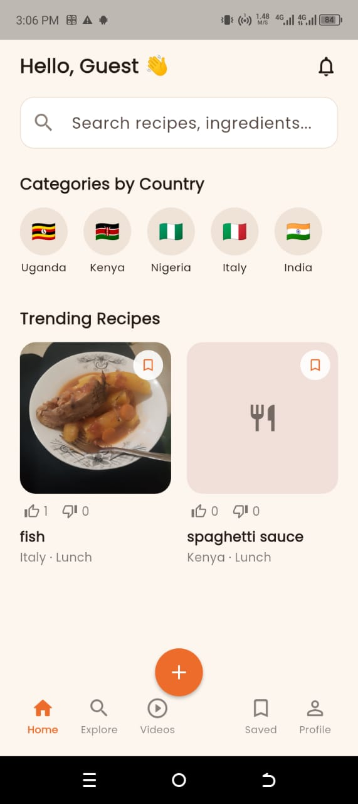
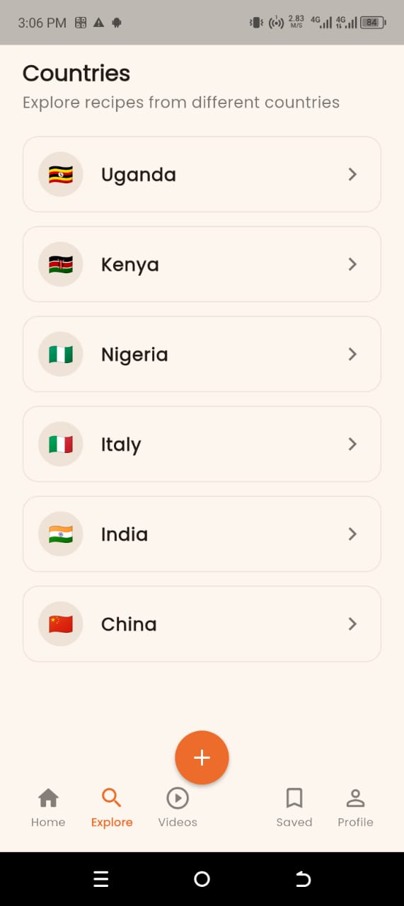
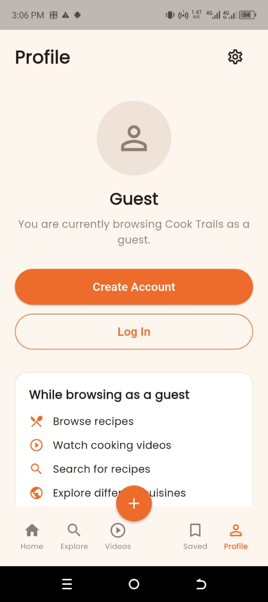

01
Discover recipes
Find recipes from Uganda and beyond, organised so you can discover something new to cook.
YOUR RECIPE JOURNEY STARTS HERE
Cook Trails brings recipes, cooking videos and food lovers together in one place. Explore local favourites and dishes from around the world.
Cook Trails
Good foodWHAT YOU CAN DO
Find recipes from Uganda and beyond, organised so you can discover something new to cook.
Learn through short cooking videos and follow along with recipes in a more visual way.
Keep recipes you love in one place so you can easily come back to them later.
Follow other cooks and become part of a growing food community.
ABOUT COOK TRAILS
Cook Trails is a recipe and food-sharing app built to make discovering and sharing food more social. Starting in Uganda, the platform brings local and international recipes together with videos and community features.
Whether you are learning to cook, looking for your next meal or sharing a recipe of your own, Cook Trails is designed to make the journey simple and enjoyable.
SEE THE APP
Explore recipes, discover new dishes and connect with other food lovers.



FIRST LAUNCH
Download the Android app and start exploring recipes, videos and cooks.
The APK file will be added to
downloads/cook-trails.apk
when the release build is ready.